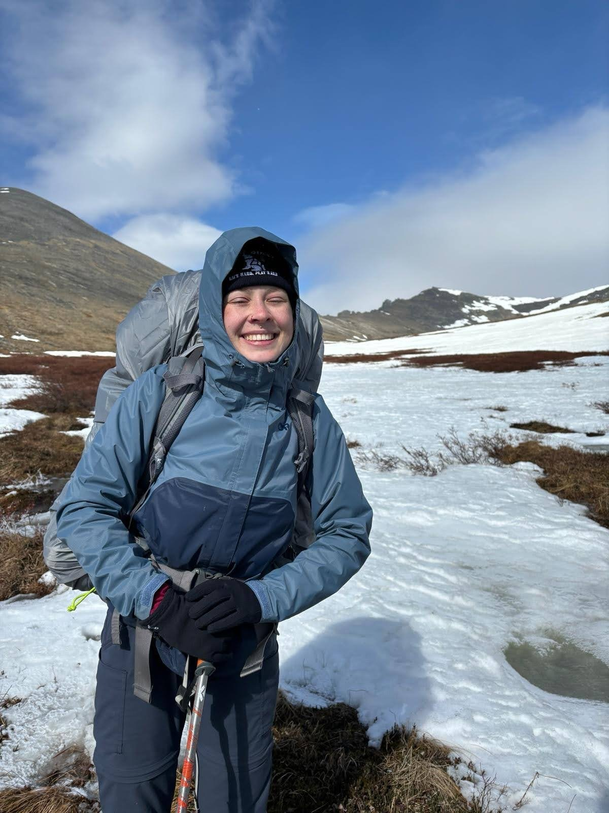
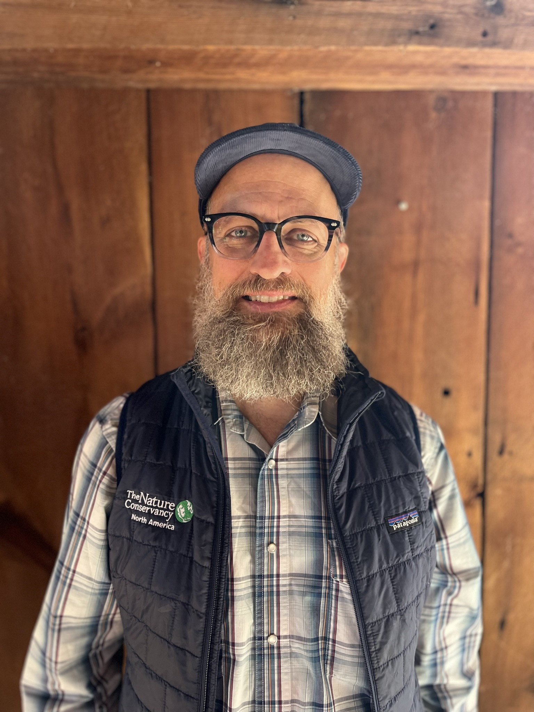
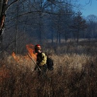

About
Funding acknowledgement
Funding for this project was provided by the US Forest Service through the National Cohesive Wildland Fire Management Strategy.
People
Eleanor Gagnon
 Eleanor Gagnon is an organizer for Fairbanks Climate Action Coalition, a nonprofit building grassroots relationships to fight climate change in Fairbanks Alaska.
She has a masters degree in International Relations with a concentration on climate policy and international finance. She uses her data analysis and policy writing skills to moonlight as a contractor for The Nature Conservancy. She has worked on projects ranging from taking a historical perspective on Biomass use in Michigan, to formulating policy proposals to shift Alaska towards a more regenerative economic system.
Follow her journey here.
Randy Swaty
Randy Swaty is an Ecologist for The Nature Conservancy’s LANDFIRE team and co-lead of theConservation Data Lab.

He uses his ecological knowledge and programming expertise to assist natural resource professionals seeking the best data to support their work. Randy leads problem-solving and data exploration sessions and demonstrates the power of leadership and coordination through his wide professional network.
His work has ranged from supporting experts to mapping potential mycorrhizal fungal communities to collaborating on a template for forest professionals preparing for forest certification audits. Randy’s accomplishments include multiple peer-reviewed publications and participation in numerous professional presentations. Most of all, Randy enjoys connecting with natural resource professionals and helping them find ways to best leverage the power of LANDFIRE data to advance and amplify their work.
You can explore Randy’s published work on Google Scholar.
Ryan Gauger
 Ryan is the Fire and Stewardship Manager at The Nature Conservancy’s Missouri Chapter. He earned a Biology degree from Franklin College, and has been practicing fire management for over 15 years. Learn more about his work here
Acknowledgements
Methods
The maps, charts, and quantitative summaries are based on data from LANDFIRE and the Missouri Prescribed Fire Council (MPFC). The visuals are created as follows:
- Historical Ecosystems Map:
- Clipped the LANDFIRE Biophysical Settings (BpS) to the Missouri state boundary.
- Mapped and grouped historical ecosystems, renaming them to match MPFC terminology.
- Needed Mean Fire Return Interval Map:
- Used LANDFIRE’s Existing Vegetation Type (EVT) as a base.
- MPFC members assigned each ecosystem a Missouri Department of Conservation Ecosystem name and an estimated historical fire regime in an Excel spreadsheet.
- Joined the Excel data to the LANDFIRE EVT spatial data for mapping and summarization.
- Current Fire Needs by County Map:
- Summarized data by county and ecosystem type.
- Historical Annual Burn Acreage by Ecosystem:
- Created a chart summarizing minimum and maximum acreage burned by ecosystem type.
- Historical Mean Fire Return Interval (MFRI) Map:
- Used the BpS attribute ‘FRI_ALLFIR’ to represent MFRI.
- Grouped year values into categories shown in the map legend.
- Applied the ‘Magma’ color ramp from Viridis Palette Generator for accessibility.
- Historical Burn Patterns Chart:
- Summarized data by ecosystem type.
Contact Randy Swaty for more information on methods.
Our Partnerships
Conservation success that is widespread and sustainable relies on partner and landowner interest and engagement as well as a long-term stewardship culture. No one person, or one organization can create the change needed on its own. Success requires the broad engagement of diverse stakeholder and policymakers. Here are just a few of those stakeholder organizations:

Sources
Data
LANDFIRE, 2016, Biophysical Settings Layer, LANDFIRE 2.2.0, U.S. Department of the Interior, Geological Survey, and U.S. Department of Agriculture. Accessed 11 April 2024 at http://www.landfire/viewer.
LANDFIRE, 2022, Existing Vegetation Type Layer, LANDFIRE 2.3.0, U.S. Department of the Interior, Geological Survey, and U.S. Department of Agriculture. Accessed 11 April 2024 at http://www.landfire/viewer.
Literature
Fogarty, D.T., Baldwin, C.E., Bauman, P., Cram, D., Goodman, L., Thompson, A., Treadwell, M.L., and Twidwell, D. (2023). Reducing Woody Encroachment in Grasslands: A Pocket Guide for Planning & Design. Great Plains Grasslands Extension Partnership, GPGEP-PB-0. https://www.ksfire.org/woody_encroachment/documents/Woody%20Encroachments%20Pocket%20Guide-LOW%20RES%20FINAL-062623.pdf
Gallagher, M. R., Kreye, J. K., Machtinger, E. T., Everland, A., Schmidt, N., & Skowronski, N. S. (2022). Can restoration of fire-dependent ecosystems reduce ticks and tick-borne disease prevalence in the eastern United States? - Oak Fire Science. Ecological Applications, 32(7). https://esajournals.onlinelibrary.wiley.com/doi/10.1002/eap.2637
Gentile, B., Erickson, E., Savage-Holst, E., & Cochran, H. (n.d.). When To Burn: A Student Led Guide to Prescribed Fire. https://static1.1.sqspcdn.com/static/f/1437373/28658175/1721327264207/TPOS+When+To+Burn+Brochure.pdf?token=Hw9dRkQAl317FX2YNXTr5QDTqhs%3D
Harper, Craig. (2014, October 22). 4 ways to light a prescribed fire. National Deer Association. https://deerassociation.com/4-ways-light-prescribed-fire/
Ladd, D., A. Brown and B. Heumann. 2006. Presettlement vegetation and rapid ecological assessment of glade landscapes in the Ava region, Mark Twain National Forest. The Nature Conservancy, Missouri Field Office, 2800 S. Brentwood Blvd. St. Louis, MO 63144.
Maginel, C. J., Knapp, B. O., Kabrick, J. M., & Muzika, R.-M. (2019). Landscape- and site-level responses of woody structure and ground flora to repeated prescribed fire in the Missouri Ozarks. Canadian Journal of Forest Research, 49(8), 1004–1014. https://doi.org/10.1139/cjfr-2018-0492
NDA Staff. (2022, February 2). Prescribed fire basics: Learning to burn safely and effectively with wildlife biologist Shan Cammack . National Deer Association. https://deerassociation.com/shan-cammack/
Prescribed fire. (n.d.). Missouri Department of Conservation. Retrieved October 31, 2024, from https://mdc.mo.gov/your-property/fire-management/prescribed-fire
Resop, L. (2022, February 9). Burn outside the box: Try prescribed fire at a new time of year . National Deer Association. https://deerassociation.com/burn-outside-the-box-try-prescribed-fire-at-a-new-time-of-year/
Robinson, W., & Doolen, C. (2023, October 18). Fall burning for bobwhites. Quail Forever. https://quailforever.org/BlogLanding/Blogs/Quail-Forever/Fall-Burning-for-Bobwhites.aspx
The Missouri Comprehensive Conservation Strategy. (2022). Missouri Department of Conservation. https://mdc.mo.gov/sites/default/files/2022-04/2022-Missouri-CCS.pdf
Thomas, L. (2024a). Plan for medical safety when preparing for prescribed fire. https://deerassociation.com/avoid-prescribed-fire-injuries-with-these-tips-from-a-physician-and-woodland-firefighter/
Thomas, L. (2024). Prescribed fire near power lines could zap your wallet. https://deerassociation.com/prescribed-fire-near-power-lines-could-zap-your-wallet/
Vaughn, B. D. H. (2024). Fire in the Ozarks. ArcGIS StoryMaps. https://storymaps.arcgis.com/stories/f6b48b2f3b2b483381b0befd18b8f35f